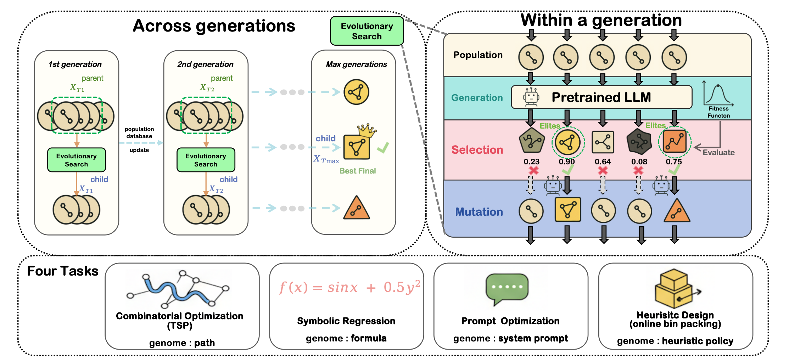
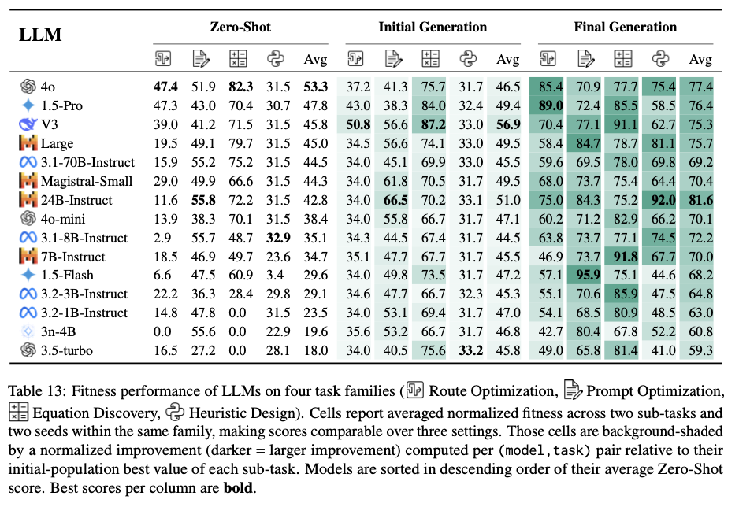
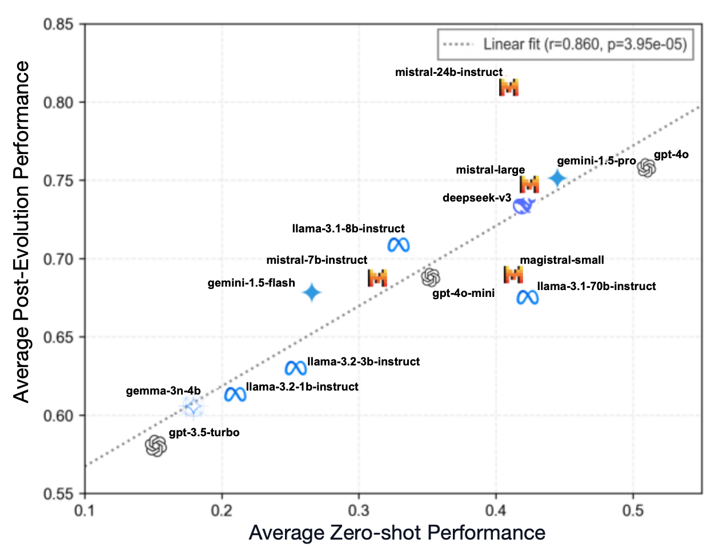
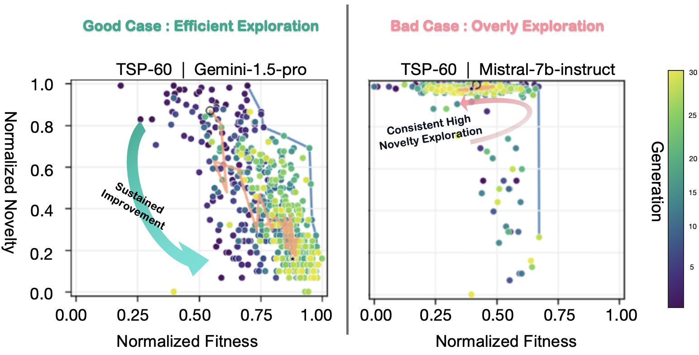
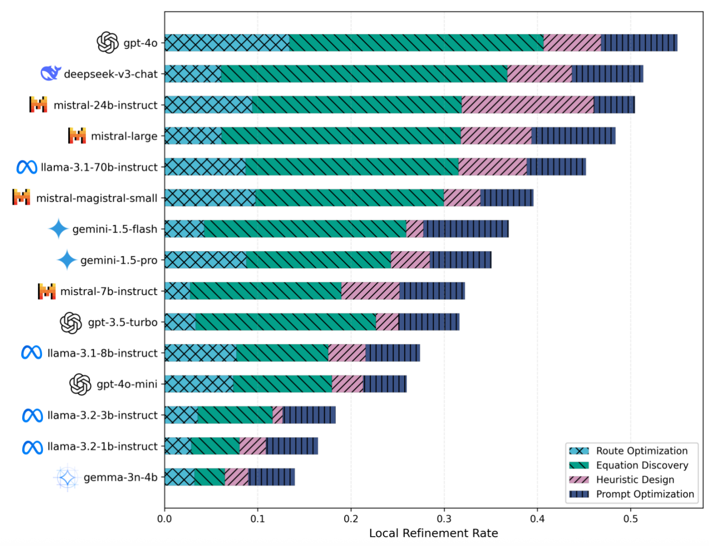

Recent work has demonstrated the promise of orchestrating large language models (LLMs) within evolutionary and agentic optimization systems. However, the mechanisms driving these optimization gains remain poorly understood. In this work, we present a large-scale study of LLM-guided evolutionary optimization, collecting optimization trajectories for 15 LLMs across 8 optimization problems. While base problem-solving ability, measured via zero-shot performance, correlates with final optimization outcomes, it explains only part of the variance: models with similar zero-shot capability often induce dramatically different search trajectories and final performance. To explain this gap, we analyze breakthrough dynamics and the geometry of optimization trajectories in the semantic space of candidate solutions. We find that effective LLM optimizers behave as strong local refiners, progressively localizing their search while producing frequent, incremental improvements across generations. In contrast, weaker optimizers exhibit large semantic drift, with occasional large breakthroughs followed by prolonged stagnation, reminiscent of behavior observed in classical metaheuristics. Notably, various measures of solution novelty do not predict final performance; novelty is beneficial only when the search remains sufficiently localized around high-performing regions of the solution space. Our results highlight the importance of trajectory-level evaluation for understanding and improving LLM-based agentic optimization systems, and provide actionable insights for future work on learning to search.
Curious to see how different LLMs navigate the solution space? Go straight to explore the trajectories interactively

LLM-guided evolutionary optimization framework. We study LLM optimization across generations (left) and within individual generations (right). Our evaluation covers four task families: combinatorial optimization (TSP), symbolic regression, prompt optimization, and heuristic design (online bin packing).

Fitness performance of LLMs across four task families. Results show averaged normalized fitness scores across route optimization, prompt optimization, equation discovery, and heuristic design tasks. Models are ranked by their zero-shot performance, with background shading indicating improvement over initial populations.

Zero-shot performance vs. post-evolution performance across LLMs. While there is a significant correlation (r=0.860, p=3.95e-05) between zero-shot problem-solving ability and final optimization outcomes, being a strong one-shot problem solver does not necessarily imply being an effective evolutionary search operator. Models with similar zero-shot capabilities can exhibit dramatically different optimization trajectories and final performance.

Efficient exploration vs. overly exploratory search behaviors. Gemini-1.5-Pro (left) demonstrates efficient exploration with sustained improvement and progressive localization. In contrast, Mistral-7B-Instruct (right) exhibits consistent high novelty exploration but fails to convert this exploration into fitness gains, illustrating that novelty without proper exploitation leads to poor optimization outcomes.

Refinement rate across LLMs and task families. This indicator measures the frequency with which a model produces an offspring that is strictly better than its parent. Regression analysis reveals that average refinement rate is by far the strongest predictor of final performance (coefficient = 0.548, z = 4.16, p < 0.001), significantly outperforming zero-shot performance as a predictor. This reinforces our hypothesis that effective LLM optimizers behave as strong local refiners, consistently producing incremental improvements rather than relying on rare breakthrough events.
Different optimization trajectories for two LLMs with similar zero-shot performance on TSP-60. Each point represents a candidate solution, colored by generation. Gemini-1.5-Pro (left) displays sustained fitness improvement and progressive localization. Mistral-7B-Instruct (right) maintains high novelty but fails to exploit it into fitness gains.
Explore evolution trajectories across different tasks and models. Compare up to 4 models side-by-side.
If you find our work useful, please consider citing:
@article{trajectory2026llm,
title={What Makes an LLM a Good Optimizer? A Trajectory Analysis of LLM-Guided Evolutionary Search},
author={Xinhao Zhang and Xi Chen and François Portet and Maxime Peyrard},
journal={Submission to ACL2026},
year={2026},
url={https://your-project-url.github.io},
}